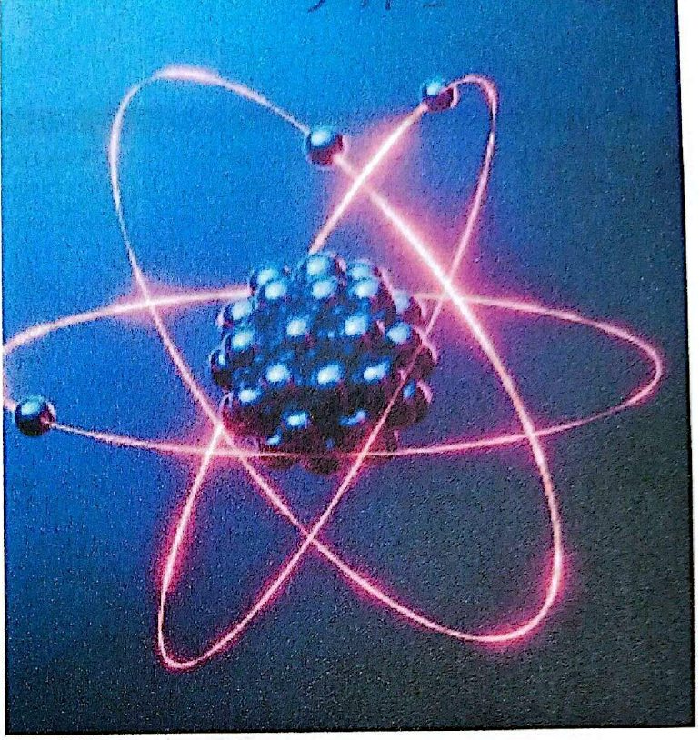
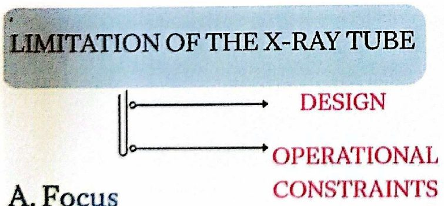
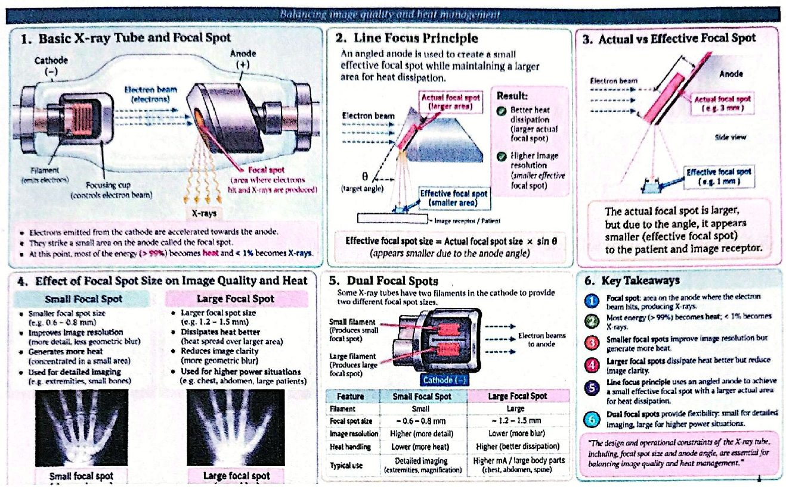
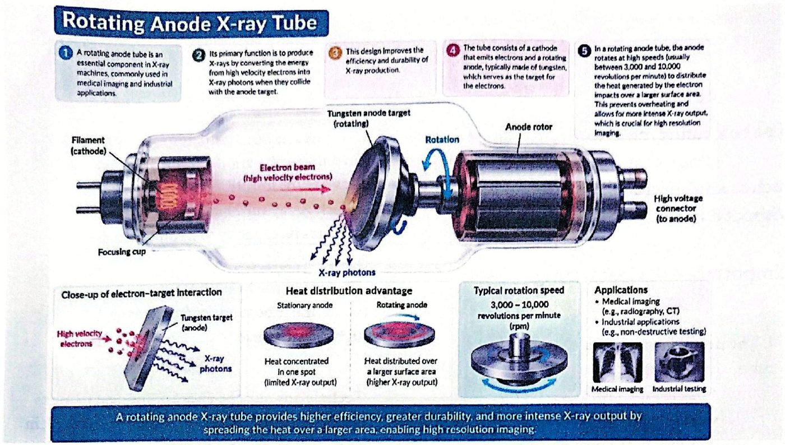
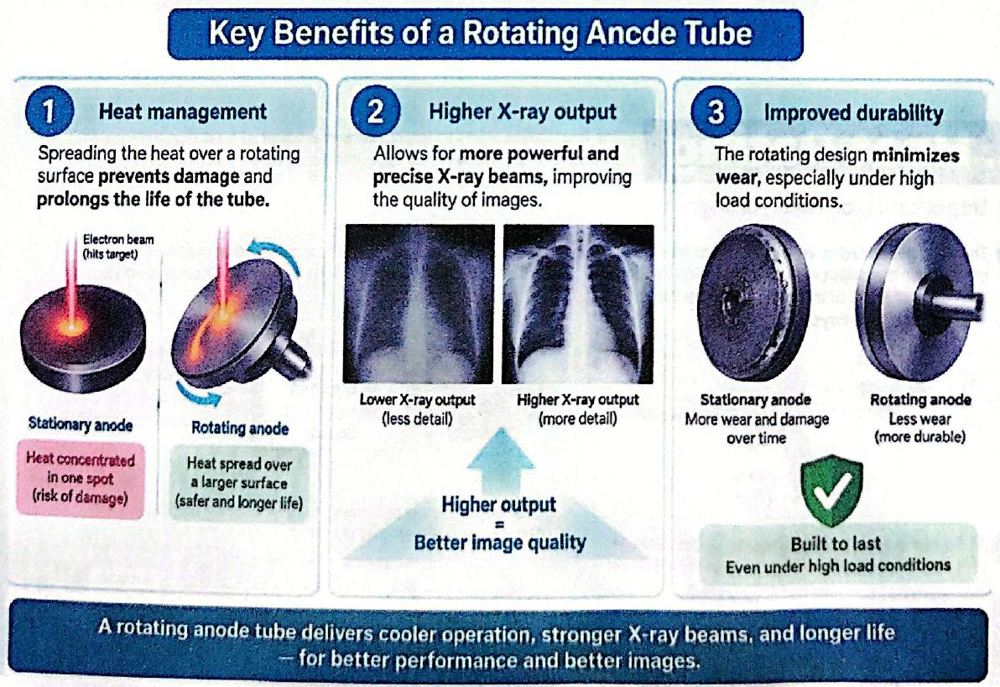
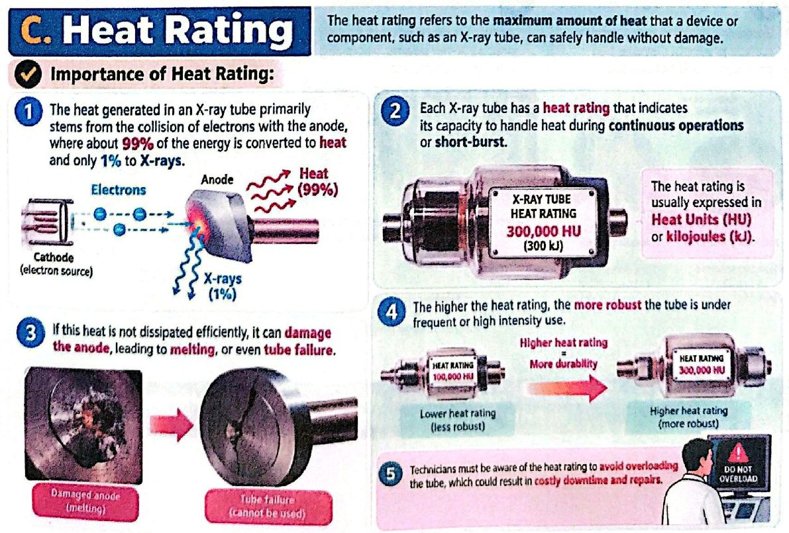

محدِّدات أنبوب الأشعة السينيةExperiment (3): Limitation of the x-ray tube (Line focus, Rotation anode tube and Heat rating)
عملي · م03 · 7.5 دقيقةأقسام المحاضرة (5)
- محدِّدات أنبوب الأشعة: البؤرةLimitation of the X-ray Tube — A. Focus
- البؤرة: الموازنة بين جودة الصورة وإدارة الحرارةFocal Spot — Balancing Image Quality and Heat Management
- أنبوب الأنود الدوّارB. Rotation Anode Tube
- الفوائد الرئيسية لأنبوب الأنود الدوّارKey Benefits of a Rotating Anode Tube
- التصنيف الحراريC. Heat Rating
محدِّدات أنبوب الأشعة: البؤرةLimitation of the X-ray Tube — A. Focus

LIMITATION OF THE X-RAY TUBE DESIGN OPERATIONAL CONSTRAINTS
محدِّدات أنبوب الأشعة السينية: التصميم، وقيود التشغيل.

أ. البؤرةA. Focus
Focus in an X-ray tube refers to the area on the anode where the electron beam hits, creating X-rays.
البؤرة في أنبوب الأشعة السينية تعني المنطقة على الأنود التي تضربها حزمة الإلكترونات، فتتولّد الأشعة السينية.
The size of this focal spot plays a critical role in determining the sharpness and quality of the X-ray image.
حجم هذه البؤرة له دور حاسم في تحديد حدّة صورة الأشعة وجودتها.
- • Line Focus Principle: An angled anode is used to balance heat management and resolution by creating a small effective focal spot while maintaining a larger area for heat dissipation.مبدأ البؤرة الخطية: يُستعمل أنود مائل للموازنة بين إدارة الحرارة ودقة الصورة، بتكوين بؤرة فعّالة صغيرة مع الإبقاء على مساحة أكبر لتبديد الحرارة.
- • Focal Spot Size: Smaller spots improve image resolution, but generate more heat. Larger spots dissipate heat better but reduce image clarity.حجم البؤرة: البؤر الأصغر تحسّن دقة الصورة لكنها تولّد حرارة أكثر، والبؤر الأكبر تبدّد الحرارة أفضل لكنها تقلّل وضوح الصورة.
- • Dual Focal Spots: Some X-ray tubes offer two focal spot sizes-(small for detailed imaging ) and (large for higher power situations).البؤرتان المزدوجتان: بعض الأنابيب توفّر حجمين للبؤرة: (صغيرة للتصوير التفصيلي) و(كبيرة للحالات التي تحتاج قدرة أعلى).
البؤرة: الموازنة بين جودة الصورة وإدارة الحرارةFocal Spot — Balancing Image Quality and Heat Management

1. الأنبوب الأساسي والبؤرة1. Basic X-ray Tube and Focal Spot
- • Electrons emitted from the cathode are accelerated towards the anode.الإلكترونات المنبعثة من الكاثود تُسرَّع نحو الأنود.
- • They strike a small area on the anode called the focal spot.تضرب منطقة صغيرة على الأنود تُسمّى البؤرة.
- • At this point, most of the energy (> 99%) becomes heat and < 1% becomes X-rays.عند هذه النقطة يتحوّل معظم الطاقة (أكثر من 99%) إلى حرارة، وأقل من 1% يصبح أشعة سينية.
2. مبدأ البؤرة الخطية2. Line Focus Principle
An angled anode is used to create a small effective focal spot while maintaining a larger area for heat dissipation.
يُستعمل أنود مائل لتكوين بؤرة فعّالة صغيرة مع الإبقاء على مساحة أكبر لتبديد الحرارة. النتيجة: تبديد أفضل للحرارة (بؤرة فعلية أكبر)، ودقة صورة أعلى (بؤرة فعّالة أصغر).
Effective focal spot size = Actual focal spot size × sin θ (appears smaller due to the anode angle)
حجم البؤرة الفعّالة = حجم البؤرة الفعلية × جيب الزاوية θ (تبدو أصغر بسبب زاوية الأنود).
3. البؤرة الفعلية مقابل الفعّالة3. Actual vs Effective Focal Spot
The actual focal spot is larger, but due to the angle, it appears smaller (effective focal spot) to the patient and image receptor.
البؤرة الفعلية أكبر (مثلاً 3 مم)، لكن بسبب الزاوية تبدو أصغر (البؤرة الفعّالة، مثلاً 1 مم) بالنسبة للمريض ومستقبِل الصورة.
4. تأثير حجم البؤرة على جودة الصورة والحرارة4. Effect of Focal Spot Size on Image Quality and Heat
- • Small Focal Spot: Smaller focal spot size (e.g. 0.6 – 0.8 mm) · Improves image resolution (more detail, less geometric blur) · Generates more heat (concentrated in a small area) · Used for detailed imaging (e.g. extremities, small bones)البؤرة الصغيرة: حجم أصغر (مثلاً 0.6–0.8 مم)، تحسّن دقة الصورة (تفاصيل أكثر وضبابية هندسية أقل)، تولّد حرارة أكثر (مركّزة في مساحة صغيرة)، وتُستعمل للتصوير التفصيلي (مثل الأطراف والعظام الصغيرة).
- • Large Focal Spot: Larger focal spot size (e.g. 1.2 – 1.5 mm) · Dissipates heat better (heat spread over larger area) · Reduces image clarity (more geometric blur) · Used for higher power situations (e.g. chest, abdomen, large patients)البؤرة الكبيرة: حجم أكبر (مثلاً 1.2–1.5 مم)، تبدّد الحرارة أفضل (موزّعة على مساحة أكبر)، تقلّل وضوح الصورة (ضبابية هندسية أكثر)، وتُستعمل للحالات التي تحتاج قدرة أعلى (مثل الصدر والبطن والمرضى كبار الحجم).
5. البؤرتان المزدوجتان5. Dual Focal Spots
Some X-ray tubes have two filaments in the cathode to provide two different focal spot sizes.
بعض الأنابيب فيها فتيلتان في الكاثود لتوفير حجمين مختلفين للبؤرة: الفتيلة الصغيرة تنتج بؤرة صغيرة، والكبيرة تنتج بؤرة كبيرة.
- • Small Focal Spot: Filament Small · ~ 0.6 – 0.8 mm · Image resolution Higher (more detail) · Heat handling Lower (more heat) · Detailed imaging (extremities, magnification)البؤرة الصغيرة: فتيلة صغيرة، ~0.6–0.8 مم، دقة صورة أعلى (تفاصيل أكثر)، تحمّل حرارة أقل (حرارة أكثر)، للتصوير التفصيلي (الأطراف والتكبير).
- • Large Focal Spot: Filament Large · ~ 1.2 – 1.5 mm · Image resolution Lower (more blur) · Heat handling Higher (better dissipation) · Higher mA / large body parts (chest, abdomen, spine)البؤرة الكبيرة: فتيلة كبيرة، ~1.2–1.5 مم، دقة صورة أقل (ضبابية أكثر)، تحمّل حرارة أعلى (تبديد أفضل)، لـ mA أعلى والأجزاء الكبيرة من الجسم (الصدر والبطن والعمود الفقري).
6. أهم النقاط6. Key Takeaways
- 1. Focal spot: area on the anode where the electron beam hits, producing X-rays.البؤرة: منطقة على الأنود تضربها حزمة الإلكترونات فتنتج الأشعة السينية.
- 2. Most energy (> 99%) becomes heat; < 1% becomes X-rays.معظم الطاقة (أكثر من 99%) يصبح حرارة؛ وأقل من 1% يصبح أشعة سينية.
- 3. Smaller focal spots improve image resolution but generate more heat.البؤر الأصغر تحسّن دقة الصورة لكنها تولّد حرارة أكثر.
- 4. Larger focal spots dissipate heat better but reduce image clarity.البؤر الأكبر تبدّد الحرارة أفضل لكنها تقلّل وضوح الصورة.
- 5. Line focus principle uses an angled anode to achieve a small effective focal spot with a larger actual area for heat dissipation.مبدأ البؤرة الخطية يستعمل أنوداً مائلاً للحصول على بؤرة فعّالة صغيرة مع مساحة فعلية أكبر لتبديد الحرارة.
- 6. Dual focal spots provide flexibility: small for detailed imaging, large for higher power situations.البؤرتان المزدوجتان تعطيان مرونة: الصغيرة للتصوير التفصيلي، والكبيرة للحالات التي تحتاج قدرة أعلى.
"The design and operational constraints of the X-ray tube, including, focal spot size and anode angle, are essential for balancing image quality and heat management."
«تصميم أنبوب الأشعة وقيود تشغيله، ومنها حجم البؤرة وزاوية الأنود، أساسية للموازنة بين جودة الصورة وإدارة الحرارة.»
أنبوب الأنود الدوّارB. Rotation Anode Tube
- • A rotating anode tube is an essential component in X-ray machines, commonly used in medical imaging and industrial applications.أنبوب الأنود الدوّار مكوّن أساسي في أجهزة الأشعة السينية، ويُستعمل كثيراً في التصوير الطبي والتطبيقات الصناعية.
- • Its primary function is to produce X-rays by converting the energy from high velocity electrons into X-ray photons when they collide with the anode target.وظيفته الأساسية إنتاج الأشعة السينية بتحويل طاقة الإلكترونات عالية السرعة إلى فوتونات أشعة سينية عند اصطدامها بهدف الأنود.
- • This design improves the efficiency and durability of X-ray production.هذا التصميم يحسّن كفاءة إنتاج الأشعة السينية ومتانته.
- • The tube consists of a cathode that emits electrons and a rotating anode, typically made of tungsten, which serves as the target for the electrons.يتكوّن الأنبوب من كاثود يبعث الإلكترونات وأنود دوّار، مصنوع عادةً من التنغستن، يعمل هدفاً للإلكترونات.
- • In a rotating anode tube, the anode rotates at high speeds (usually between 3,000 and 10,000 revolutions per minute) to distribute the heat generated by the electron impacts over a larger surface area. This prevents overheating and allows for more intense X ray output, which is crucial for high resolution imagingفي أنبوب الأنود الدوّار يدور الأنود بسرعات عالية (عادةً بين 3,000 و10,000 دورة في الدقيقة) لتوزيع الحرارة الناتجة عن اصطدام الإلكترونات على مساحة سطح أكبر. هذا يمنع السخونة المفرطة ويسمح بناتج أشعة أشد، وهو ضروري للتصوير عالي الدقة.

- • Stationary anode: Heat concentrated in one spot (limited X-ray output)الأنود الثابت: الحرارة مركّزة في نقطة واحدة (ناتج أشعة محدود).
- • Rotating anode: Heat distributed over a larger surface area (higher X-ray output)الأنود الدوّار: الحرارة موزّعة على مساحة سطح أكبر (ناتج أشعة أعلى).
- • Typical rotation speed: 3,000 – 10,000 revolutions per minute (rpm)سرعة الدوران المعتادة: 3,000–10,000 دورة في الدقيقة.
- • Applications: Medical imaging (e.g., radiography, CT) · Industrial applications (e.g., non-destructive testing)الاستعمالات: التصوير الطبي (مثل التصوير الشعاعي والمفراس) · التطبيقات الصناعية (مثل الفحص غير الإتلافي).
A rotating anode X-ray tube provides higher efficiency, greater durability, and more intense X-ray output by spreading the heat over a larger area, enabling high resolution imaging.
أنبوب الأنود الدوّار يعطي كفاءة أعلى ومتانة أكبر وناتج أشعة أشد، بتوزيع الحرارة على مساحة أكبر، مما يتيح التصوير عالي الدقة.
الفوائد الرئيسية لأنبوب الأنود الدوّارKey Benefits of a Rotating Anode Tube
- 1. Heat management: Spreading the heat over a rotating surface prevents damage and prolongs the life of the tube.إدارة الحرارة: توزيع الحرارة على سطح دوّار يمنع التلف ويطيل عمر الأنبوب.
- 2. Higher X-ray output: Allows for more powerful and precise X-ray beams, improving the quality of images.ناتج أشعة أعلى: يسمح بحزم أشعة أقوى وأدق، فتتحسّن جودة الصور.
- 3. Improved durability: The rotating design minimizes wear, especially under high load conditions.متانة أفضل: التصميم الدوّار يقلّل التآكل، خصوصاً تحت ظروف الحمل العالي.

A rotating anode tube delivers cooler operation, stronger X-ray beams, and longer life – for better performance and better images.
أنبوب الأنود الدوّار يعطي تشغيلاً أبرد وحزم أشعة أقوى وعمراً أطول، لأداء أفضل وصور أفضل.
التصنيف الحراريC. Heat Rating
The heat rating refers to the maximum amount of heat that a device or component, such as an X-ray tube, can safely handle without damage.
التصنيف الحراري يعني أقصى كمية حرارة يستطيع جهاز أو مكوّن، مثل أنبوب الأشعة السينية، أن يتحمّلها بأمان دون أن يتلف.
أهمية التصنيف الحراريImportance of Heat Rating:
- 1. The heat generated in an X-ray tube primarily stems from the collision of electrons with the anode, where about 99% of the energy is converted to heat and only 1%to X-raysالحرارة المتولّدة في أنبوب الأشعة تنتج أساساً من اصطدام الإلكترونات بالأنود، حيث يتحوّل نحو 99% من الطاقة إلى حرارة و1% فقط إلى أشعة سينية.
- 2. If this heat is not dissipated efficiently, it can damage the anode, leading to, melting, or even tube failureإذا لم تُبدَّد هذه الحرارة بكفاءة فقد تتلف الأنود، فتؤدي إلى انصهاره أو حتى تعطّل الأنبوب.
- 3. Each X-ray tube has a heat rating that indicates its capacity to handle heat during continuous operations or short-burst.لكل أنبوب أشعة تصنيف حراري يدل على قدرته على تحمّل الحرارة أثناء التشغيل المستمر أو الدفعات القصيرة.
- 4. The heat rating is usually expressed in Heat Units (HU) or kilojoules (kJ).يُعبَّر عن التصنيف الحراري عادةً بالوحدات الحرارية (HU) أو بالكيلوجول (kJ).
- 5. The higher the heat rating, the more robust the tube is under frequent or high intensity use.كلما ارتفع التصنيف الحراري كان الأنبوب أمتن عند الاستعمال المتكرر أو عالي الشدة.
- 6. Technicians must be aware of the heat rating to avoid overloading the tube, which could result in costly downtime and repairs..يجب أن يعرف التقنيون التصنيف الحراري لتجنّب تحميل الأنبوب فوق طاقته، لأن ذلك قد يسبّب توقّفاً وإصلاحات مكلفة.

المحاضرة مسموعة
نص الأستاذ بالإنكليزي مثل الأصل · 7.5 دقيقة. اضغط أي جملة تسمعها، أو مصطلح منقّط تسمع لفظه ومعناه.
Limitation of the X-ray Tube — A. Focusمحدِّدات أنبوب الأشعة: البؤرة
Limitation of the X-ray Tube — A. Focus
LIMITATION OF THE X-RAY TUBE DESIGN OPERATIONAL CONSTRAINTS
A. Focus
Focus in an X-ray tube refers to the area on the anode where the electron beam hits, creating X-rays.
The size of this focal spot plays a critical role in determining the sharpness and quality of the X-ray image.
Line Focus Principle: An angled anode is used to balance heat management and resolution by creating a small effective focal spot while maintaining a larger area for heat dissipation.
Focal Spot Size: Smaller spots improve image resolution, but generate more heat. Larger spots dissipate heat better but reduce image clarity.
Dual Focal Spots: Some X-ray tubes offer two focal spot sizes-(small for detailed imaging ) and (large for higher power situations).
Focal Spot — Balancing Image Quality and Heat Managementالبؤرة: الموازنة بين جودة الصورة وإدارة الحرارة
Focal Spot — Balancing Image Quality and Heat Management
1. Basic X-ray Tube and Focal Spot
Electrons emitted from the cathode are accelerated towards the anode.
They strike a small area on the anode called the focal spot.
At this point, most of the energy (> 99%) becomes heat and < 1% becomes X-rays.
2. Line Focus Principle
An angled anode is used to create a small effective focal spot while maintaining a larger area for heat dissipation.
Effective focal spot size = Actual focal spot size × sin θ (appears smaller due to the anode angle)
3. Actual vs Effective Focal Spot
The actual focal spot is larger, but due to the angle, it appears smaller (effective focal spot) to the patient and image receptor.
4. Effect of Focal Spot Size on Image Quality and Heat
Small Focal Spot: Smaller focal spot size (e.g. 0.6 – 0.8 mm) · Improves image resolution (more detail, less geometric blur) · Generates more heat (concentrated in a small area) · Used for detailed imaging (e.g. extremities, small bones)
Large Focal Spot: Larger focal spot size (e.g. 1.2 – 1.5 mm) · Dissipates heat better (heat spread over larger area) · Reduces image clarity (more geometric blur) · Used for higher power situations (e.g. chest, abdomen, large patients)
5. Dual Focal Spots
Some X-ray tubes have two filaments in the cathode to provide two different focal spot sizes.
Small Focal Spot: Filament Small · ~ 0.6 – 0.8 mm · Image resolution Higher (more detail) · Heat handling Lower (more heat) · Detailed imaging (extremities, magnification)
Large Focal Spot: Filament Large · ~ 1.2 – 1.5 mm · Image resolution Lower (more blur) · Heat handling Higher (better dissipation) · Higher mA / large body parts (chest, abdomen, spine)
6. Key Takeaways
Focal spot: area on the anode where the electron beam hits, producing X-rays.
Most energy (> 99%) becomes heat; < 1% becomes X-rays.
Smaller focal spots improve image resolution but generate more heat.
Larger focal spots dissipate heat better but reduce image clarity.
Line focus principle uses an angled anode to achieve a small effective focal spot with a larger actual area for heat dissipation.
Dual focal spots provide flexibility: small for detailed imaging, large for higher power situations.
"The design and operational constraints of the X-ray tube, including, focal spot size and anode angle, are essential for balancing image quality and heat management."
B. Rotation Anode Tubeأنبوب الأنود الدوّار
B. Rotation Anode Tube
A rotating anode tube is an essential component in X-ray machines, commonly used in medical imaging and industrial applications.
Its primary function is to produce X-rays by converting the energy from high velocity electrons into X-ray photons when they collide with the anode target.
This design improves the efficiency and durability of X-ray production.
The tube consists of a cathode that emits electrons and a rotating anode, typically made of tungsten, which serves as the target for the electrons.
In a rotating anode tube, the anode rotates at high speeds (usually between 3,000 and 10,000 revolutions per minute) to distribute the heat generated by the electron impacts over a larger surface area. This prevents overheating and allows for more intense X ray output, which is crucial for high resolution imaging
Stationary anode: Heat concentrated in one spot (limited X-ray output)
Rotating anode: Heat distributed over a larger surface area (higher X-ray output)
Typical rotation speed: 3,000 – 10,000 revolutions per minute (rpm)
Applications: Medical imaging (e.g., radiography, CT) · Industrial applications (e.g., non-destructive testing)
A rotating anode X-ray tube provides higher efficiency, greater durability, and more intense X-ray output by spreading the heat over a larger area, enabling high resolution imaging.
Key Benefits of a Rotating Anode Tubeالفوائد الرئيسية لأنبوب الأنود الدوّار
Key Benefits of a Rotating Anode Tube
Heat management: Spreading the heat over a rotating surface prevents damage and prolongs the life of the tube.
Higher X-ray output: Allows for more powerful and precise X-ray beams, improving the quality of images.
Improved durability: The rotating design minimizes wear, especially under high load conditions.
A rotating anode tube delivers cooler operation, stronger X-ray beams, and longer life – for better performance and better images.
C. Heat Ratingالتصنيف الحراري
C. Heat Rating
The heat rating refers to the maximum amount of heat that a device or component, such as an X-ray tube, can safely handle without damage.
Importance of Heat Rating:
The heat generated in an X-ray tube primarily stems from the collision of electrons with the anode, where about 99% of the energy is converted to heat and only 1%to X-rays
If this heat is not dissipated efficiently, it can damage the anode, leading to, melting, or even tube failure
Each X-ray tube has a heat rating that indicates its capacity to handle heat during continuous operations or short-burst.
The heat rating is usually expressed in Heat Units (HU) or kilojoules (kJ).
The higher the heat rating, the more robust the tube is under frequent or high intensity use.
Technicians must be aware of the heat rating to avoid overloading the tube, which could result in costly downtime and repairs..
كل أسئلة المحاضرة: السؤال إنكليزي وتحته عربي، وكل خيار بلغتين، والجواب الصحيح معلّم ويّاه «ليش صح» · 0.2 MB
قراءة الأسئلة تحميلاضغط أي مصطلح منقّط تسمع لفظه ومعناه.